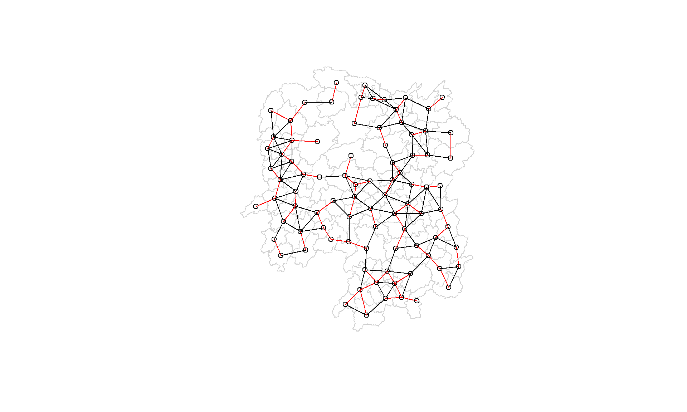
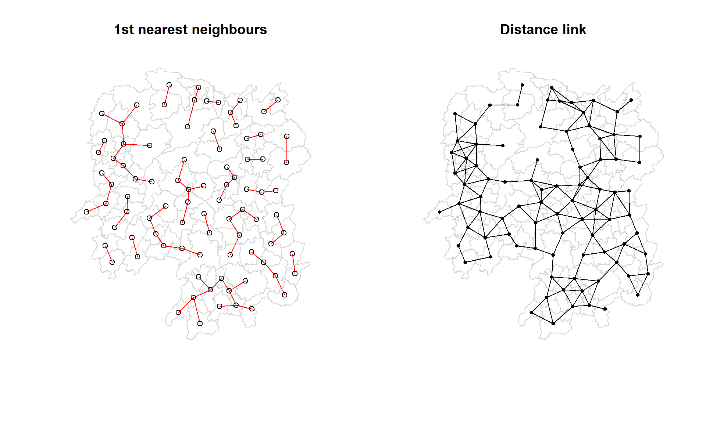

pacman::p_load(sf, spdep, tmap, tidyverse, knitr, tibble)Spatial Weights and Applications
Outcome of this Exercise
How to compute spatial weights using R. By the end to this hands-on exercise, you will be able to:
import geospatial data using appropriate function(s) of sf package,
import csv file using appropriate function of readr package,
perform relational join using appropriate join function of dplyr package,
compute spatial weights using appropriate functions of spdep package, and
calculate spatially lagged variables using appropriate functions of spdep package.
1.0 Setting the Environment
ensure that spdep, sf, tmap and tidyverse packages of R are currently installed
2.0 Importing the data
Two data sets will be used in this hands-on exercise, they are:
Hunan county boundary layer. This is a geospatial data set in ESRI shapefile format.
Hunan_2012.csv: This csv file contains selected Hunan’s local development indicators in 2012.
hunan <- st_read(dsn = "data/geospatial", layer = "Hunan")Reading layer `Hunan' from data source
`C:\Users\jiale\Desktop\IS415\IS415-GAA\Hands_On_Exercises\Hands_On_Exercise_5\data\geospatial'
using driver `ESRI Shapefile'
Simple feature collection with 88 features and 7 fields
Geometry type: POLYGON
Dimension: XY
Bounding box: xmin: 108.7831 ymin: 24.6342 xmax: 114.2544 ymax: 30.12812
Geodetic CRS: WGS 84hunan2012 <- read_csv("data/aspatial/Hunan_2012.csv")
hunan <- left_join(hunan,hunan2012)3.0 Visualising Regional Development Indicator
basemap <- tm_shape(hunan) +
tm_polygons() +
tm_text("NAME_3", size=0.5)
gdppc <- qtm(hunan, "GDPPC")
tmap_arrange(basemap, gdppc, asp=1, ncol=2)4.0 Computing Contiguity Spatial Weights
poly2nb() of spdep package to compute contiguity weight matrices for the study area. This function builds a neighbours list based on regions with contiguous boundaries. Remember to use “pass” a queen argument that takes TRUE or FALSE as options, and it will return a list of first order neighbours using Queen Critiera
4.1 Computing (QUEEN) contiguity based neighbours
wm_q <- poly2nb(hunan, queen=TRUE):poly2nbcreates a neighborhood list based on polygon boundaries.hunanis the spatial polygon data (likely aSpatialPolygonsDataFrameorsfobject).queen=TRUEspecifies that the Queen contiguity rule should be used. This means that two polygons are considered neighbors if they share at least one point (either a boundary or a corner).wm_qstores the neighborhood structure as an object.
summary(wm_q):- This provides a summary of the neighborhood list, showing how many neighbors each polygon has and other summary statistics.
wm_q <- poly2nb(hunan, queen=TRUE)
summary(wm_q)Neighbour list object:
Number of regions: 88
Number of nonzero links: 448
Percentage nonzero weights: 5.785124
Average number of links: 5.090909
Link number distribution:
1 2 3 4 5 6 7 8 9 11
2 2 12 16 24 14 11 4 2 1
2 least connected regions:
30 65 with 1 link
1 most connected region:
85 with 11 linksThe summary report above shows that there are 88 area units in Hunan. The most connected area unit has 11 neighbours. There are two area units with only one heighbours.
For each polygon in our polygon object, wm_q lists all neighboring polygons. For example, to see the neighbors for the first polygon in the object, we use the following code chunk, to which we see they have 5 neighbours
wm_q[[1]][1] 2 3 4 57 85We can retrive the county name of Polygon ID=1 by using the code chunk below:
hunan$County[1][1] "Anxiang"The output reveals that Polygon ID=1 is Anxiang county.
To reveal the county names of the five neighboring polygons, the code chunk will be used:
hunan$NAME_3[c(2,3,4,57,85)][1] "Hanshou" "Jinshi" "Li" "Nan" "Taoyuan"We can retrieve the GDPPC of these five countries by using the code chunk below.
nb1 <- wm_q[[1]]
# Retrieve the GDPPC values for the neighbors and the first polygon
gdp_values <- c(hunan$GDPPC[1], hunan$GDPPC[nb1])
# Retrieve the county names for the first polygon and its neighbors
county_names <- c(hunan$NAME_3[1], hunan$NAME_3[nb1])
# Assign the county names as names of the GDPPC values
names(gdp_values) <- county_names
# Display the GDPPC values with county names
gdp_valuesAnxiang Hanshou Jinshi Li Nan Taoyuan
23667 20981 34592 24473 21311 22879 # Initialize a list to store the data for all polygons
gdp_data <- lapply(seq_along(wm_q), function(i) {
# Get the neighbors of polygon i
neighbors <- wm_q[[i]]
# Get the GDPPC values for the polygon and its neighbors
gdp_values <- c(hunan$GDPPC[i], hunan$GDPPC[neighbors])
# Get the county names for the polygon and its neighbors
county_names <- c(hunan$NAME_3[i], hunan$NAME_3[neighbors])
# Create a tibble for each polygon with neighbors
data <- tibble(
Polygon = county_names[1], # Main polygon name
Neighbor = county_names[-1], # Neighbor names
GDPPC = gdp_values[-1], # Neighbor GDPPC values
Neighbour_GDPPC = gdp_values[1] # Main polygon GDPPC
)
return(data)
})
# Combine all rows into a single data frame
gdp_df <- bind_rows(gdp_data)
# View the combined data in a cleaner format
gdp_df# A tibble: 448 × 4
Polygon Neighbor GDPPC Neighbour_GDPPC
<chr> <chr> <dbl> <dbl>
1 Anxiang Hanshou 20981 23667
2 Anxiang Jinshi 34592 23667
3 Anxiang Li 24473 23667
4 Anxiang Nan 21311 23667
5 Anxiang Taoyuan 22879 23667
6 Hanshou Anxiang 23667 20981
7 Hanshou Nan 21311 20981
8 Hanshou Yuanjiang 26258 20981
9 Hanshou Taojiang 19509 20981
10 Hanshou Taoyuan 22879 20981
# ℹ 438 more rows4.2 Creating (ROOK) contiguity based neighbours
Instead of queen true, we use False here
wm_r <- poly2nb(hunan, queen= FALSE)
summary(wm_q)Neighbour list object:
Number of regions: 88
Number of nonzero links: 448
Percentage nonzero weights: 5.785124
Average number of links: 5.090909
Link number distribution:
1 2 3 4 5 6 7 8 9 11
2 2 12 16 24 14 11 4 2 1
2 least connected regions:
30 65 with 1 link
1 most connected region:
85 with 11 linksThe summary report above shows that there are 88 area units in Hunan using the rook. The most connected area unit has 10 neighbours. There are two area units with only one heighbours.
For each polygon in our polygon object, wm_q lists all neighboring polygons. For example, to see the neighbors for the first polygon in the object, we use the following code chunk, to which we see they have 4 neighbours
wm_r[[1]][1] 3 4 57 85We can retrive the county name of Polygon ID=1 by using the code chunk below:
hunan$County[1][1] "Anxiang"The output reveals that Polygon ID=1 is Anxiang county.
To reveal the county names of the five neighboring polygons, the code chunk will be used:
hunan$NAME_3[c(3,4,57,85)][1] "Jinshi" "Li" "Nan" "Taoyuan"We can retrieve the GDPPC of these five countries by using the code chunk below.
nb1 <- wm_r[[1]]
# Retrieve the GDPPC values for the neighbors and the first polygon
gdp_values <- c(hunan$GDPPC[1], hunan$GDPPC[nb1])
# Retrieve the county names for the first polygon and its neighbors
county_names <- c(hunan$NAME_3[1], hunan$NAME_3[nb1])
# Assign the county names as names of the GDPPC values
names(gdp_values) <- county_names
# Display the GDPPC values with county names
gdp_valuesAnxiang Jinshi Li Nan Taoyuan
23667 34592 24473 21311 22879 # Initialize a list to store the data for all polygons
gdp_data <- lapply(seq_along(wm_q), function(i) {
# Get the neighbors of polygon i
neighbors <- wm_r[[i]]
# Get the GDPPC values for the polygon and its neighbors
gdp_values <- c(hunan$GDPPC[i], hunan$GDPPC[neighbors])
# Get the county names for the polygon and its neighbors
county_names <- c(hunan$NAME_3[i], hunan$NAME_3[neighbors])
# Create a tibble for each polygon with neighbors
data <- tibble(
Polygon = county_names[1], # Main polygon name
Neighbor = county_names[-1], # Neighbor names
GDPPC = gdp_values[-1], # Neighbor GDPPC values
Neighbour_GDPPC = gdp_values[1] # Main polygon GDPPC
)
return(data)
})
# Combine all rows into a single data frame
gdp_df <- bind_rows(gdp_data)
# View the combined data in a cleaner format
gdp_df# A tibble: 440 × 4
Polygon Neighbor GDPPC Neighbour_GDPPC
<chr> <chr> <dbl> <dbl>
1 Anxiang Jinshi 34592 23667
2 Anxiang Li 24473 23667
3 Anxiang Nan 21311 23667
4 Anxiang Taoyuan 22879 23667
5 Hanshou Nan 21311 20981
6 Hanshou Yuanjiang 26258 20981
7 Hanshou Taojiang 19509 20981
8 Hanshou Taoyuan 22879 20981
9 Jinshi Anxiang 23667 34592
10 Jinshi Li 24473 34592
# ℹ 430 more rows4.3 Visualizing Contiguity Weights
To create a connectivity graph for polygons, we first need to obtain points for each polygon, which can be done using their centroids. The centroids will serve as the points for the graph.
The process involves calculating the centroids using the sf package. Instead of directly using st_centroid on the spatial data object, we need to extract the centroid coordinates into a separate data frame. This is done by applying the st_centroid function to the geometry column of the spatial data using a mapping function (map_dbl from the purrr package).
By mapping st_centroid over the geometry column, we can extract the longitude (the first value in each centroid) using double bracket notation [[1]]. This prepares the longitude values for further use in creating the connectivity graph.
longitude <- map_dbl(hunan$geometry, ~st_centroid(.x)[[1]]) #This allows us to get only the longitude, which is the first value in each centroid.
latitude <- map_dbl(hunan$geometry, ~st_centroid(.x)[[2]]) #We do the same for latitude with one key difference. We access the second value per each centroid with [[2]].
coords <- cbind(longitude, latitude) # Now that we have latitude and longitude, we use cbind to put longitude and latitude into the same object.
head(coords) #We check the first few observations to see if things are formatted correctly. longitude latitude
[1,] 112.1531 29.44362
[2,] 112.0372 28.86489
[3,] 111.8917 29.47107
[4,] 111.7031 29.74499
[5,] 111.6138 29.49258
[6,] 111.0341 29.798634.3.1 Plotting Contiguity based Neighbours Map
plot(hunan$geometry, border="lightgrey")
plot(wm_q, coords, pch = 19, cex = 0.6, add = TRUE, col= "red")
plot(hunan$geometry, border="lightgrey")
plot(wm_r, coords, pch = 19, cex = 0.6, add = TRUE, col= "red")par(mfrow=c(1,2))
plot(hunan$geometry, border="lightgrey", main="Queen Contiguity")
plot(wm_q, coords, pch = 19, cex = 0.6, add = TRUE, col= "red")
plot(hunan$geometry, border="lightgrey", main="Rook Contiguity")
plot(wm_r, coords, pch = 19, cex = 0.6, add = TRUE, col = "red")5.0 Computing Distance Based Neighbors
Using the dnearneigh() function from the spdep package. The function identifies neighbors within a specified distance range (distance band) using Euclidean distances.
Key Steps:
Determining the Cut-off Distance:
- The goal is to find an upper limit for the distance band by following a few steps using
knearneigh(),knn2nb(), andnbdists().
- The goal is to find an upper limit for the distance band by following a few steps using
Procedure:
Step 1: Use
knearneigh()to find theknearest neighbors for each point. This returns an object representing the neighborhood relationships between regions.Step 2: Convert the nearest neighbor object into a neighbors list using
knn2nb(). This converts the relationships into integer vectors containing the IDs of neighboring regions.Step 3: Calculate the distances between neighboring points using
nbdists(), which returns the distances in the same units as the coordinates or in kilometers if the coordinates are unprojected.Step 4: Use
unlist()to flatten the list structure of the distances returned bynbdists().
5.1 Determine Cut-Off Distance
# Extract the coordinates of the regions
#coords <- coordinates(hunan)
# Find the k-nearest neighbors
k1 <- knn2nb(knearneigh(coords))
# Calculate the distances between the neighbors
k1dists <- unlist(nbdists(k1, coords, longlat = TRUE))
# Display a summary of the distances
summary(k1dists) Min. 1st Qu. Median Mean 3rd Qu. Max.
24.79 32.57 38.01 39.07 44.52 61.79 The summary report shows that the largest first nearest neighbour distance is 61.79 km, so using this as the upper threshold gives certainty that all units will have at least one neighbour.
5.2 Computing Fixed and Adaptive Distance Weight Matrix
Note
When to use fixed or adaptive?
Fixed Distance Weighting: Use when spatial points are distributed evenly and when you want a constant radius of influence for all regions.
Adaptive Distance Weighting: Use when spatial points are unevenly distributed and when you want each region to have a comparable number of neighbors, regardless of their physical distance.
Compute the distance weight matrix by using dnearneigh() as shown in the code chunk below.
wm_d62 <- dnearneigh(coords, 0, 62, longlat = TRUE)
wm_d62Neighbour list object:
Number of regions: 88
Number of nonzero links: 324
Percentage nonzero weights: 4.183884
Average number of links: 3.681818
Note
Quiz: What is the meaning of “Average number of links: 3.681818” shown above?
“Average number of links: 3.681818” refers to the average number of neighboring regions each region in the dataset has, based on the distance threshold defined earlier 62km.
“Average number of links: 3.681818” means that, on average, each region has around 3.68 neighbors within a 62-kilometer radius.
Visualizing the weight matrix
neighbor_counts <- data.frame(
County = hunan$County,
Neighbors = card(wm_d62) # card() gives the number of neighbors for each region
)
# View the data frame
print(neighbor_counts) County Neighbors
1 Anxiang 5
2 Hanshou 4
3 Jinshi 4
4 Li 3
5 Linli 4
6 Shimen 1
7 Liuyang 2
8 Ningxiang 4
9 Wangcheng 4
10 Anren 4
11 Guidong 3
12 Jiahe 5
13 Linwu 4
14 Rucheng 2
15 Yizhang 1
16 Yongxing 4
17 Zixing 3
18 Changning 3
19 Hengdong 5
20 Hengnan 5
21 Hengshan 6
22 Leiyang 4
23 Qidong 3
24 Chenxi 4
25 Zhongfang 4
26 Huitong 4
27 Jingzhou 2
28 Mayang 6
29 Tongdao 2
30 Xinhuang 1
31 Xupu 2
32 Yuanling 1
33 Zhijiang 5
34 Lengshuijiang 3
35 Shuangfeng 6
36 Xinhua 5
37 Chengbu 2
38 Dongan 3
39 Dongkou 4
40 Longhui 3
41 Shaodong 5
42 Suining 5
43 Wugang 3
44 Xinning 2
45 Xinshao 6
46 Shaoshan 5
47 Xiangxiang 5
48 Baojing 5
49 Fenghuang 4
50 Guzhang 6
51 Huayuan 4
52 Jishou 6
53 Longshan 2
54 Luxi 5
55 Yongshun 4
56 Anhua 1
57 Nan 5
58 Yuanjiang 5
59 Jianghua 3
60 Lanshan 4
61 Ningyuan 5
62 Shuangpai 4
63 Xintian 5
64 Huarong 4
65 Linxiang 1
66 Miluo 5
67 Pingjiang 2
68 Xiangyin 4
69 Cili 2
70 Chaling 3
71 Liling 2
72 Yanling 3
73 You 4
74 Zhuzhou 5
75 Sangzhi 2
76 Yueyang 3
77 Qiyang 3
78 Taojiang 2
79 Shaoyang 4
80 Lianyuan 5
81 Hongjiang 5
82 Hengyang 6
83 Guiyang 4
84 Changsha 4
85 Taoyuan 2
86 Xiangtan 4
87 Dao 4
88 Jiangyong 2# Or use View() in RStudio for an interactive table viewPlotting It
First Plot: The base map of the regions (Hunan) is drawn using their geographic boundaries.
Second Plot: The distance-based neighbor links are added, connecting regions that are within 62 km of each other.
Third Plot: The k-nearest neighbor links are added as red arrows, showing the regions’ closest neighbors.
plot(hunan$geometry, border="lightgrey")
plot(wm_d62, coords, add=TRUE)
plot(k1, coords, add=TRUE, col="red", length=0.08)
Comparing it against 1st nearest and distance link.
par(mfrow=c(1,2))
plot(hunan$geometry, border="lightgrey", main="1st nearest neighbours")
plot(k1, coords, add=TRUE, col="red", length=0.08)
plot(hunan$geometry, border="lightgrey", main="Distance link")
plot(wm_d62, coords, add=TRUE, pch = 19, cex = 0.6)
It is possible to control the numbers of neighbours directly using k-nearest neighbours, either accepting asymmetric neighbours or imposing symmetry as shown in the code chunk below.
knn6 <- knn2nb(knearneigh(coords, k=6))
knn6Neighbour list object:
Number of regions: 88
Number of nonzero links: 528
Percentage nonzero weights: 6.818182
Average number of links: 6
Non-symmetric neighbours listSimilarly, we can display the content of the matrix by using str().
str(knn6)List of 88
$ : int [1:6] 2 3 4 5 57 64
$ : int [1:6] 1 3 57 58 78 85
$ : int [1:6] 1 2 4 5 57 85
$ : int [1:6] 1 3 5 6 69 85
$ : int [1:6] 1 3 4 6 69 85
$ : int [1:6] 3 4 5 69 75 85
$ : int [1:6] 9 66 67 71 74 84
$ : int [1:6] 9 46 47 78 80 86
$ : int [1:6] 8 46 66 68 84 86
$ : int [1:6] 16 19 22 70 72 73
$ : int [1:6] 10 14 16 17 70 72
$ : int [1:6] 13 15 60 61 63 83
$ : int [1:6] 12 15 60 61 63 83
$ : int [1:6] 11 15 16 17 72 83
$ : int [1:6] 12 13 14 17 60 83
$ : int [1:6] 10 11 17 22 72 83
$ : int [1:6] 10 11 14 16 72 83
$ : int [1:6] 20 22 23 63 77 83
$ : int [1:6] 10 20 21 73 74 82
$ : int [1:6] 18 19 21 22 23 82
$ : int [1:6] 19 20 35 74 82 86
$ : int [1:6] 10 16 18 19 20 83
$ : int [1:6] 18 20 41 77 79 82
$ : int [1:6] 25 28 31 52 54 81
$ : int [1:6] 24 28 31 33 54 81
$ : int [1:6] 25 27 29 33 42 81
$ : int [1:6] 26 29 30 37 42 81
$ : int [1:6] 24 25 33 49 52 54
$ : int [1:6] 26 27 37 42 43 81
$ : int [1:6] 26 27 28 33 49 81
$ : int [1:6] 24 25 36 39 40 54
$ : int [1:6] 24 31 50 54 55 56
$ : int [1:6] 25 26 28 30 49 81
$ : int [1:6] 36 40 41 45 56 80
$ : int [1:6] 21 41 46 47 80 82
$ : int [1:6] 31 34 40 45 56 80
$ : int [1:6] 26 27 29 42 43 44
$ : int [1:6] 23 43 44 62 77 79
$ : int [1:6] 25 40 42 43 44 81
$ : int [1:6] 31 36 39 43 45 79
$ : int [1:6] 23 35 45 79 80 82
$ : int [1:6] 26 27 37 39 43 81
$ : int [1:6] 37 39 40 42 44 79
$ : int [1:6] 37 38 39 42 43 79
$ : int [1:6] 34 36 40 41 79 80
$ : int [1:6] 8 9 35 47 78 86
$ : int [1:6] 8 21 35 46 80 86
$ : int [1:6] 49 50 51 52 53 55
$ : int [1:6] 28 33 48 51 52 54
$ : int [1:6] 32 48 51 52 54 55
$ : int [1:6] 28 48 49 50 52 54
$ : int [1:6] 28 48 49 50 51 54
$ : int [1:6] 48 50 51 52 55 75
$ : int [1:6] 24 28 49 50 51 52
$ : int [1:6] 32 48 50 52 53 75
$ : int [1:6] 32 34 36 78 80 85
$ : int [1:6] 1 2 3 58 64 68
$ : int [1:6] 2 57 64 66 68 78
$ : int [1:6] 12 13 60 61 87 88
$ : int [1:6] 12 13 59 61 63 87
$ : int [1:6] 12 13 60 62 63 87
$ : int [1:6] 12 38 61 63 77 87
$ : int [1:6] 12 18 60 61 62 83
$ : int [1:6] 1 3 57 58 68 76
$ : int [1:6] 58 64 66 67 68 76
$ : int [1:6] 9 58 67 68 76 84
$ : int [1:6] 7 65 66 68 76 84
$ : int [1:6] 9 57 58 66 78 84
$ : int [1:6] 4 5 6 32 75 85
$ : int [1:6] 10 16 19 22 72 73
$ : int [1:6] 7 19 73 74 84 86
$ : int [1:6] 10 11 14 16 17 70
$ : int [1:6] 10 19 21 70 71 74
$ : int [1:6] 19 21 71 73 84 86
$ : int [1:6] 6 32 50 53 55 69
$ : int [1:6] 58 64 65 66 67 68
$ : int [1:6] 18 23 38 61 62 63
$ : int [1:6] 2 8 9 46 58 68
$ : int [1:6] 38 40 41 43 44 45
$ : int [1:6] 34 35 36 41 45 47
$ : int [1:6] 25 26 28 33 39 42
$ : int [1:6] 19 20 21 23 35 41
$ : int [1:6] 12 13 15 16 22 63
$ : int [1:6] 7 9 66 68 71 74
$ : int [1:6] 2 3 4 5 56 69
$ : int [1:6] 8 9 21 46 47 74
$ : int [1:6] 59 60 61 62 63 88
$ : int [1:6] 59 60 61 62 63 87
- attr(*, "region.id")= chr [1:88] "1" "2" "3" "4" ...
- attr(*, "call")= language knearneigh(x = coords, k = 6)
- attr(*, "sym")= logi FALSE
- attr(*, "type")= chr "knn"
- attr(*, "knn-k")= num 6
- attr(*, "class")= chr "nb"Plotting it and against 1st nearest and distance link
par(mfrow=c(1,2))
plot(hunan$geometry, border="lightgrey", main="1st nearest neighbours")
plot(k1, coords, add=TRUE, col="red", length=0.08)
plot(hunan$geometry, border="lightgrey", main="Distance link")
plot(knn6, coords, add=TRUE, pch = 19, cex = 0.6)6.0 Weight Based on In-versed Distance Method.
The inverse distance weighting (IDW) method is a technique used in spatial analysis to assign weights to neighboring regions or points based on their distance. The core idea is that closer neighbors exert a stronger influence, and the weight of a neighbor decreases as its distance increases. In the inverse distance method, weights are inversely proportional to the distance between points, meaning that the closer two points are, the higher the weight assigned to their relationship.
First, we will compute the distances between areas by using nbdists() of spdep.
dist <- nbdists(wm_q, coords, longlat = TRUE)
ids <- lapply(dist, function(x) 1/(x))
ids[[1]]
[1] 0.01535405 0.03916350 0.01820896 0.02807922 0.01145113
[[2]]
[1] 0.01535405 0.01764308 0.01925924 0.02323898 0.01719350
[[3]]
[1] 0.03916350 0.02822040 0.03695795 0.01395765
[[4]]
[1] 0.01820896 0.02822040 0.03414741 0.01539065
[[5]]
[1] 0.03695795 0.03414741 0.01524598 0.01618354
[[6]]
[1] 0.015390649 0.015245977 0.021748129 0.011883901 0.009810297
[[7]]
[1] 0.01708612 0.01473997 0.01150924 0.01872915
[[8]]
[1] 0.02022144 0.03453056 0.02529256 0.01036340 0.02284457 0.01500600 0.01515314
[[9]]
[1] 0.02022144 0.01574888 0.02109502 0.01508028 0.02902705 0.01502980
[[10]]
[1] 0.02281552 0.01387777 0.01538326 0.01346650 0.02100510 0.02631658 0.01874863
[8] 0.01500046
[[11]]
[1] 0.01882869 0.02243492 0.02247473
[[12]]
[1] 0.02779227 0.02419652 0.02333385 0.02986130 0.02335429
[[13]]
[1] 0.02779227 0.02650020 0.02670323 0.01714243
[[14]]
[1] 0.01882869 0.01233868 0.02098555
[[15]]
[1] 0.02650020 0.01233868 0.01096284 0.01562226
[[16]]
[1] 0.02281552 0.02466962 0.02765018 0.01476814 0.01671430
[[17]]
[1] 0.01387777 0.02243492 0.02098555 0.01096284 0.02466962 0.01593341 0.01437996
[[18]]
[1] 0.02039779 0.02032767 0.01481665 0.01473691 0.01459380
[[19]]
[1] 0.01538326 0.01926323 0.02668415 0.02140253 0.01613589 0.01412874
[[20]]
[1] 0.01346650 0.02039779 0.01926323 0.01723025 0.02153130 0.01469240 0.02327034
[[21]]
[1] 0.02668415 0.01723025 0.01766299 0.02644986 0.02163800
[[22]]
[1] 0.02100510 0.02765018 0.02032767 0.02153130 0.01489296
[[23]]
[1] 0.01481665 0.01469240 0.01401432 0.02246233 0.01880425 0.01530458 0.01849605
[[24]]
[1] 0.02354598 0.01837201 0.02607264 0.01220154 0.02514180
[[25]]
[1] 0.02354598 0.02188032 0.01577283 0.01949232 0.02947957
[[26]]
[1] 0.02155798 0.01745522 0.02212108 0.02220532
[[27]]
[1] 0.02155798 0.02490625 0.01562326
[[28]]
[1] 0.01837201 0.02188032 0.02229549 0.03076171 0.02039506
[[29]]
[1] 0.02490625 0.01686587 0.01395022
[[30]]
[1] 0.02090587
[[31]]
[1] 0.02607264 0.01577283 0.01219005 0.01724850 0.01229012 0.01609781 0.01139438
[8] 0.01150130
[[32]]
[1] 0.01220154 0.01219005 0.01712515 0.01340413 0.01280928 0.01198216 0.01053374
[8] 0.01065655
[[33]]
[1] 0.01949232 0.01745522 0.02229549 0.02090587 0.01979045
[[34]]
[1] 0.03113041 0.03589551 0.02882915
[[35]]
[1] 0.01766299 0.02185795 0.02616766 0.02111721 0.02108253 0.01509020
[[36]]
[1] 0.01724850 0.03113041 0.01571707 0.01860991 0.02073549 0.01680129
[[37]]
[1] 0.01686587 0.02234793 0.01510990 0.01550676
[[38]]
[1] 0.01401432 0.02407426 0.02276151 0.01719415
[[39]]
[1] 0.01229012 0.02172543 0.01711924 0.02629732 0.01896385
[[40]]
[1] 0.01609781 0.01571707 0.02172543 0.01506473 0.01987922 0.01894207
[[41]]
[1] 0.02246233 0.02185795 0.02205991 0.01912542 0.01601083 0.01742892
[[42]]
[1] 0.02212108 0.01562326 0.01395022 0.02234793 0.01711924 0.01836831 0.01683518
[[43]]
[1] 0.01510990 0.02629732 0.01506473 0.01836831 0.03112027 0.01530782
[[44]]
[1] 0.01550676 0.02407426 0.03112027 0.01486508
[[45]]
[1] 0.03589551 0.01860991 0.01987922 0.02205991 0.02107101 0.01982700
[[46]]
[1] 0.03453056 0.04033752 0.02689769
[[47]]
[1] 0.02529256 0.02616766 0.04033752 0.01949145 0.02181458
[[48]]
[1] 0.02313819 0.03370576 0.02289485 0.01630057 0.01818085
[[49]]
[1] 0.03076171 0.02138091 0.02394529 0.01990000
[[50]]
[1] 0.01712515 0.02313819 0.02551427 0.02051530 0.02187179
[[51]]
[1] 0.03370576 0.02138091 0.02873854
[[52]]
[1] 0.02289485 0.02394529 0.02551427 0.02873854 0.03516672
[[53]]
[1] 0.01630057 0.01979945 0.01253977
[[54]]
[1] 0.02514180 0.02039506 0.01340413 0.01990000 0.02051530 0.03516672
[[55]]
[1] 0.01280928 0.01818085 0.02187179 0.01979945 0.01882298
[[56]]
[1] 0.01036340 0.01139438 0.01198216 0.02073549 0.01214479 0.01362855 0.01341697
[[57]]
[1] 0.028079221 0.017643082 0.031423501 0.029114131 0.013520292 0.009903702
[[58]]
[1] 0.01925924 0.03142350 0.02722997 0.01434859 0.01567192
[[59]]
[1] 0.01696711 0.01265572 0.01667105 0.01785036
[[60]]
[1] 0.02419652 0.02670323 0.01696711 0.02343040
[[61]]
[1] 0.02333385 0.01265572 0.02343040 0.02514093 0.02790764 0.01219751 0.02362452
[[62]]
[1] 0.02514093 0.02002219 0.02110260
[[63]]
[1] 0.02986130 0.02790764 0.01407043 0.01805987
[[64]]
[1] 0.02911413 0.01689892
[[65]]
[1] 0.02471705
[[66]]
[1] 0.01574888 0.01726461 0.03068853 0.01954805 0.01810569
[[67]]
[1] 0.01708612 0.01726461 0.01349843 0.01361172
[[68]]
[1] 0.02109502 0.02722997 0.03068853 0.01406357 0.01546511
[[69]]
[1] 0.02174813 0.01645838 0.01419926
[[70]]
[1] 0.02631658 0.01963168 0.02278487
[[71]]
[1] 0.01473997 0.01838483 0.03197403
[[72]]
[1] 0.01874863 0.02247473 0.01476814 0.01593341 0.01963168
[[73]]
[1] 0.01500046 0.02140253 0.02278487 0.01838483 0.01652709
[[74]]
[1] 0.01150924 0.01613589 0.03197403 0.01652709 0.01342099 0.02864567
[[75]]
[1] 0.011883901 0.010533736 0.012539774 0.018822977 0.016458383 0.008217581
[[76]]
[1] 0.01352029 0.01434859 0.01689892 0.02471705 0.01954805 0.01349843 0.01406357
[[77]]
[1] 0.014736909 0.018804247 0.022761507 0.012197506 0.020022195 0.014070428
[7] 0.008440896
[[78]]
[1] 0.02323898 0.02284457 0.01508028 0.01214479 0.01567192 0.01546511 0.01140779
[[79]]
[1] 0.01530458 0.01719415 0.01894207 0.01912542 0.01530782 0.01486508 0.02107101
[[80]]
[1] 0.01500600 0.02882915 0.02111721 0.01680129 0.01601083 0.01982700 0.01949145
[8] 0.01362855
[[81]]
[1] 0.02947957 0.02220532 0.01150130 0.01979045 0.01896385 0.01683518
[[82]]
[1] 0.02327034 0.02644986 0.01849605 0.02108253 0.01742892
[[83]]
[1] 0.023354289 0.017142433 0.015622258 0.016714303 0.014379961 0.014593799
[7] 0.014892965 0.018059871 0.008440896
[[84]]
[1] 0.01872915 0.02902705 0.01810569 0.01361172 0.01342099 0.01297994
[[85]]
[1] 0.011451133 0.017193502 0.013957649 0.016183544 0.009810297 0.010656545
[7] 0.013416965 0.009903702 0.014199260 0.008217581 0.011407794
[[86]]
[1] 0.01515314 0.01502980 0.01412874 0.02163800 0.01509020 0.02689769 0.02181458
[8] 0.02864567 0.01297994
[[87]]
[1] 0.01667105 0.02362452 0.02110260 0.02058034
[[88]]
[1] 0.01785036 0.02058034dist: Calculates the distances between each region and its neighbors.lapply()with1/(x): Applies the inverse distance formula to those distances, assigning higher weights to closer neighbors.ids: Stores the inverse distance weights for each region’s neighbors, which can be used in spatial modeling or analysis to emphasize the influence of closer regions over more distant ones.
The inverse distance method here helps quantify the influence of neighbors, where closer neighbors exert a stronger influence compared to those farther away.
7.0 Row-standardized Weight Matrix
Assigning spatial weights to neighboring polygons using the “W” style, which stands for row-standardized weights.
Key Concepts:
Row-Standardized Weights (style=“W”):
In this method, each neighboring polygon is assigned an equal weight.
The weight assigned to each neighbor is the inverse of the total number of neighbors for the polygon.
For example, if a polygon has 5 neighbors, the weight assigned to each of its neighbors is 1551.
Summing Weighted Values:
This method sums up the weighted values from each neighboring polygon. The row-standardized weights ensure that the weights for a polygon’s neighbors sum up to 1.
Edge effect: Polygons at the edge of the study area may have fewer neighbors, potentially leading to biased estimates of spatial autocorrelation, as their weights are distributed over fewer polygons.
rswm_q <- nb2listw(wm_q, style="W", zero.policy = TRUE)
rswm_qCharacteristics of weights list object:
Neighbour list object:
Number of regions: 88
Number of nonzero links: 448
Percentage nonzero weights: 5.785124
Average number of links: 5.090909
Weights style: W
Weights constants summary:
n nn S0 S1 S2
W 88 7744 88 37.86334 365.9147nb2listw(): Converts the neighbor listwm_qinto a row-standardized spatial weights matrix.zero.policy = TRUE: Allows regions with no neighbors to be included, assigning them a weight of zero. This prevents errors for polygons without neighbors, though it should be used with caution to avoid inadvertently missing important spatial relationships.
To see the weight of the first polygon’s eight neighbors type
rswm_q$weights[10][[1]]
[1] 0.125 0.125 0.125 0.125 0.125 0.125 0.125 0.125In this case, if the 10th polygon has 8 neighbors, each neighbor will receive a weight of 18=0.125 = 0.12581=0.125. This means that when computing a spatially lagged variable (such as average neighboring income), each neighbor’s income will be multiplied by 0.125 before summing.
We can also create a row-standardized distance weight matrix based on inverse distances. This adjusts the weights by incorporating the inverse distance method while ensuring that the weights for each polygon still sum to 1.
rswm_ids <- nb2listw(wm_q, glist=ids, style="B", zero.policy=TRUE)
rswm_idsCharacteristics of weights list object:
Neighbour list object:
Number of regions: 88
Number of nonzero links: 448
Percentage nonzero weights: 5.785124
Average number of links: 5.090909
Weights style: B
Weights constants summary:
n nn S0 S1 S2
B 88 7744 8.786867 0.3776535 3.8137glist=ids: Incorporates the inverse distance weights (ids) calculated earlier into the weight matrix.style="B": This is a binary weighting scheme, where the weights are not normalized to sum to 1.
To inspect the weights for the first polygon:
rswm_ids$weights[1][[1]]
[1] 0.01535405 0.03916350 0.01820896 0.02807922 0.01145113This shows the inverse distance weights for the first polygon’s neighbors. To summarize the distribution of all weights across the dataset:
summary(unlist(rswm_ids$weights)) Min. 1st Qu. Median Mean 3rd Qu. Max.
0.008218 0.015088 0.018739 0.019614 0.022823 0.040338 8.0 Application of Spatial Weight Matrix
8.1 spatial lag with row-standardized weights
compute the average neighbor GDPPC value for each polygon. These values are often referred to as spatially lagged values.
lag.listw(rswm_q, hunan$GDPPC):
This calculates the spatial lag of GDP per capita (GDPPC) for each region using the row-standardized weights (
rswm_q).For each region, the function computes the weighted average of the GDPPC values of its neighboring regions.
Since we are using row-standardized weights, the influence of each neighboring region is scaled based on the number of neighbors. If a region has 4 neighbors, each neighbor’s influence will be 1441.
GDPPC.lag <- lag.listw(rswm_q, hunan$GDPPC)
GDPPC.lag [1] 24847.20 22724.80 24143.25 27737.50 27270.25 21248.80 43747.00 33582.71
[9] 45651.17 32027.62 32671.00 20810.00 25711.50 30672.33 33457.75 31689.20
[17] 20269.00 23901.60 25126.17 21903.43 22718.60 25918.80 20307.00 20023.80
[25] 16576.80 18667.00 14394.67 19848.80 15516.33 20518.00 17572.00 15200.12
[33] 18413.80 14419.33 24094.50 22019.83 12923.50 14756.00 13869.80 12296.67
[41] 15775.17 14382.86 11566.33 13199.50 23412.00 39541.00 36186.60 16559.60
[49] 20772.50 19471.20 19827.33 15466.80 12925.67 18577.17 14943.00 24913.00
[57] 25093.00 24428.80 17003.00 21143.75 20435.00 17131.33 24569.75 23835.50
[65] 26360.00 47383.40 55157.75 37058.00 21546.67 23348.67 42323.67 28938.60
[73] 25880.80 47345.67 18711.33 29087.29 20748.29 35933.71 15439.71 29787.50
[81] 18145.00 21617.00 29203.89 41363.67 22259.09 44939.56 16902.00 16930.00In the earlier section, we retrieved the GDPPC of these five countries by using the code chunk below.
nb1 <- wm_q[[1]]
nb1 <- hunan$GDPPC[nb1]
nb1[1] 20981 34592 24473 21311 22879
Note
Question: Can you see the meaning of Spatial lag with row-standardized weights now?
The spatial lag with row-standardized weights helps quantify the average impact of neighboring regions on a specific variable (e.g., GDP per capita). It shows how a region’s characteristics, such as economic performance, are influenced by its neighbors, with the weights for each region’s neighbors summing to 1 for consistency across regions.
Spatial Lag: Represents the weighted average of a region’s neighbors’ values, with equal weight assigned to each neighbor in the row-standardized approach.
Row-Standardized Weights: Since the sum of the weights for each region’s neighbors equals 1, the spatial lag becomes the arithmetic mean of its neighbors’ values. More neighbors dilute the influence of any single one.
Practical Use: Spatial lag reflects how the GDP of neighboring regions affects a region’s own GDP. If there is a mismatch between a region’s GDP and that of its neighbors, this will be evident in the spatial lag, making it a valuable tool in spatial econometrics for understanding regional dynamics.
Append the spatially lag GDPPC Values
lag.list <- list(hunan$NAME_3, lag.listw(rswm_q, hunan$GDPPC))
lag.res <- as.data.frame(lag.list)
colnames(lag.res) <- c("NAME_3", "lag GDPPC")
hunan <- left_join(hunan,lag.res)
head(hunan)Simple feature collection with 6 features and 36 fields
Geometry type: POLYGON
Dimension: XY
Bounding box: xmin: 110.4922 ymin: 28.61762 xmax: 112.3013 ymax: 30.12812
Geodetic CRS: WGS 84
NAME_2 ID_3 NAME_3 ENGTYPE_3 Shape_Leng Shape_Area County City
1 Changde 21098 Anxiang County 1.869074 0.10056190 Anxiang Changde
2 Changde 21100 Hanshou County 2.360691 0.19978745 Hanshou Changde
3 Changde 21101 Jinshi County City 1.425620 0.05302413 Jinshi Changde
4 Changde 21102 Li County 3.474325 0.18908121 Li Changde
5 Changde 21103 Linli County 2.289506 0.11450357 Linli Changde
6 Changde 21104 Shimen County 4.171918 0.37194707 Shimen Changde
avg_wage deposite FAI Gov_Rev Gov_Exp GDP GDPPC GIO Loan NIPCR
1 31935 5517.2 3541.0 243.64 1779.5 12482.0 23667 5108.9 2806.9 7693.7
2 32265 7979.0 8665.0 386.13 2062.4 15788.0 20981 13491.0 4550.0 8269.9
3 28692 4581.7 4777.0 373.31 1148.4 8706.9 34592 10935.0 2242.0 8169.9
4 32541 13487.0 16066.0 709.61 2459.5 20322.0 24473 18402.0 6748.0 8377.0
5 32667 564.1 7781.2 336.86 1538.7 10355.0 25554 8214.0 358.0 8143.1
6 33261 8334.4 10531.0 548.33 2178.8 16293.0 27137 17795.0 6026.5 6156.0
Bed Emp EmpR EmpRT Pri_Stu Sec_Stu Household Household_R NOIP Pop_R
1 1931 336.39 270.5 205.9 19.584 17.819 148.1 135.4 53 346.0
2 2560 456.78 388.8 246.7 42.097 33.029 240.2 208.7 95 553.2
3 848 122.78 82.1 61.7 8.723 7.592 81.9 43.7 77 92.4
4 2038 513.44 426.8 227.1 38.975 33.938 268.5 256.0 96 539.7
5 1440 307.36 272.2 100.8 23.286 18.943 129.1 157.2 99 246.6
6 2502 392.05 329.6 193.8 29.245 26.104 190.6 184.7 122 399.2
RSCG Pop_T Agri Service Disp_Inc RORP ROREmp lag GDPPC
1 3957.9 528.3 4524.41 14100 16610 0.6549309 0.8041262 24847.20
2 4460.5 804.6 6545.35 17727 18925 0.6875466 0.8511756 22724.80
3 3683.0 251.8 2562.46 7525 19498 0.3669579 0.6686757 24143.25
4 7110.2 832.5 7562.34 53160 18985 0.6482883 0.8312558 27737.50
5 3604.9 409.3 3583.91 7031 18604 0.6024921 0.8856065 27270.25
6 6490.7 600.5 5266.51 6981 19275 0.6647794 0.8407091 21248.80
geometry
1 POLYGON ((112.0625 29.75523...
2 POLYGON ((112.2288 29.11684...
3 POLYGON ((111.8927 29.6013,...
4 POLYGON ((111.3731 29.94649...
5 POLYGON ((111.6324 29.76288...
6 POLYGON ((110.8825 30.11675...Plot both GDPPC and spatial Lag GDPPC for comparison.
gdppc <- qtm(hunan, "GDPPC")
lag_gdppc <- qtm(hunan, "lag GDPPC")
tmap_arrange(gdppc, lag_gdppc, asp=1, ncol=2)
8.2 spatial lag as a sum of neighbouring values
Calculating the spatial lag by summing the GDP per capita (GDPPC) values of neighboring regions. Unlike row-standardized weights, where each neighbor’s value is averaged, here each neighbor’s GDPPC is simply added up without adjusting for the number of neighbors (since style = "B" is used, indicating binary weights). This approach gives an unweighted sum of neighboring values.
b_weights <- lapply(wm_q, function(x) 0*x + 1)
b_weights2 <- nb2listw(wm_q,
glist = b_weights,
style = "B")
b_weights2Characteristics of weights list object:
Neighbour list object:
Number of regions: 88
Number of nonzero links: 448
Percentage nonzero weights: 5.785124
Average number of links: 5.090909
Weights style: B
Weights constants summary:
n nn S0 S1 S2
B 88 7744 448 896 10224b_weights: A binary weight matrix where each neighbor is assigned a weight of 1. The function0*x + 1ensures that for each neighbor, the weight is 1, no matter the distance or number of neighbors.b_weights2: Converts the neighbor listwm_qto a binary weight matrix, meaning all neighboring polygons are equally weighted with no standardization.
lag_sum <- list(hunan$NAME_3, lag.listw(b_weights2, hunan$GDPPC))
lag.res <- as.data.frame(lag_sum)
colnames(lag.res) <- c("NAME_3", "lag_sum GDPPC")
lag_sum[[1]]
[1] "Anxiang" "Hanshou" "Jinshi" "Li"
[5] "Linli" "Shimen" "Liuyang" "Ningxiang"
[9] "Wangcheng" "Anren" "Guidong" "Jiahe"
[13] "Linwu" "Rucheng" "Yizhang" "Yongxing"
[17] "Zixing" "Changning" "Hengdong" "Hengnan"
[21] "Hengshan" "Leiyang" "Qidong" "Chenxi"
[25] "Zhongfang" "Huitong" "Jingzhou" "Mayang"
[29] "Tongdao" "Xinhuang" "Xupu" "Yuanling"
[33] "Zhijiang" "Lengshuijiang" "Shuangfeng" "Xinhua"
[37] "Chengbu" "Dongan" "Dongkou" "Longhui"
[41] "Shaodong" "Suining" "Wugang" "Xinning"
[45] "Xinshao" "Shaoshan" "Xiangxiang" "Baojing"
[49] "Fenghuang" "Guzhang" "Huayuan" "Jishou"
[53] "Longshan" "Luxi" "Yongshun" "Anhua"
[57] "Nan" "Yuanjiang" "Jianghua" "Lanshan"
[61] "Ningyuan" "Shuangpai" "Xintian" "Huarong"
[65] "Linxiang" "Miluo" "Pingjiang" "Xiangyin"
[69] "Cili" "Chaling" "Liling" "Yanling"
[73] "You" "Zhuzhou" "Sangzhi" "Yueyang"
[77] "Qiyang" "Taojiang" "Shaoyang" "Lianyuan"
[81] "Hongjiang" "Hengyang" "Guiyang" "Changsha"
[85] "Taoyuan" "Xiangtan" "Dao" "Jiangyong"
[[2]]
[1] 124236 113624 96573 110950 109081 106244 174988 235079 273907 256221
[11] 98013 104050 102846 92017 133831 158446 141883 119508 150757 153324
[21] 113593 129594 142149 100119 82884 74668 43184 99244 46549 20518
[31] 140576 121601 92069 43258 144567 132119 51694 59024 69349 73780
[41] 94651 100680 69398 52798 140472 118623 180933 82798 83090 97356
[51] 59482 77334 38777 111463 74715 174391 150558 122144 68012 84575
[61] 143045 51394 98279 47671 26360 236917 220631 185290 64640 70046
[71] 126971 144693 129404 284074 112268 203611 145238 251536 108078 238300
[81] 108870 108085 262835 248182 244850 404456 67608 33860lag.listw(b_weights2, hunan$GDPPC): This function calculates the spatial lag as the sum of GDPPC values of neighboring regions based on the binary weights. It returns a vector of summed GDPPC values for each region.lag_sum: Combines the region names (hunan$NAME_3) with the spatial lag values (summed GDPPC) into a list.lag.res: Converts this list into a data frame and assigns appropriate column names (“NAME_3” and “lag_sum GDPPC”).
Note
Question: Can you understand the meaning of Spatial lag as a sum of neighboring values now?
This method of calculating spatial lag highlights the cumulative economic influence of neighboring regions. Regions with more neighbors will tend to have larger summed values, whereas regions with fewer neighbors may have lower sums, which can be important when considering spatial spillover effects.
Spatial Lag as a Sum: In this approach, the spatial lag is the sum of the GDPPC values of a region’s neighbors. Unlike row-standardized weights where values are averaged, here each neighbor’s GDPPC is simply added up, emphasizing the total contribution from neighboring regions.
Example: If a region has three neighbors with GDPPC values of 20000, 25000, and 30000, the spatial lag would be the sum of these values: 20000+25000+30000=7500020000 + 25000 + 30000 = 7500020000+25000+30000=75000.
hunan <- left_join(hunan, lag.res)
gdppc <- qtm(hunan, "GDPPC")
lag_sum_gdppc <- qtm(hunan, "lag_sum GDPPC")
tmap_arrange(gdppc, lag_sum_gdppc, asp=1, ncol=2)8.3 spatial window average
modifying the neighbor structure to include each polygon itself as its own neighbor (i.e., adding a diagonal element), followed by computing the spatial lag of the GDPPC (Gross Domestic Product Per Capita) for each region, and finally visualizing and comparing the results.
8.3.1. Include Self in Neighbor List:
wm_qs <- include.self(wm_q)
wm_qs[[1]][1] 1 2 3 4 57 85include.self(wm_q): This function adds the diagonal element to the neighbor list, meaning that each region is now considered its own neighbor, in addition to its original neighbors.- For example, if region 1 originally had neighbors 2 and 3, after using
include.self(), region 1 will now also be its own neighbor.
- For example, if region 1 originally had neighbors 2 and 3, after using
wm_qs[[1]]: Displays the neighbors of region 1, which now includes itself.
8.3.2. Convert to Weights List:
wm_qs <- nb2listw(wm_qs)
wm_qsCharacteristics of weights list object:
Neighbour list object:
Number of regions: 88
Number of nonzero links: 536
Percentage nonzero weights: 6.921488
Average number of links: 6.090909
Weights style: W
Weights constants summary:
n nn S0 S1 S2
W 88 7744 88 30.90265 357.5308nb2listw(wm_qs): Converts the updated neighbor list (with diagonal elements) into a weights list. This weights list will now include self-influence (i.e., each region is also its own neighbor with a certain weight).Weights List: The resulting object stores the spatial weights for each region based on its new neighbor structure (including itself).
8.3.3 Calculate Spatial Lag (with Self):
lag_w_avg_gpdpc <- lag.listw(wm_qs, hunan$GDPPC)
lag_w_avg_gpdpc [1] 24650.50 22434.17 26233.00 27084.60 26927.00 22230.17 47621.20 37160.12
[9] 49224.71 29886.89 26627.50 22690.17 25366.40 25825.75 30329.00 32682.83
[17] 25948.62 23987.67 25463.14 21904.38 23127.50 25949.83 20018.75 19524.17
[25] 18955.00 17800.40 15883.00 18831.33 14832.50 17965.00 17159.89 16199.44
[33] 18764.50 26878.75 23188.86 20788.14 12365.20 15985.00 13764.83 11907.43
[41] 17128.14 14593.62 11644.29 12706.00 21712.29 43548.25 35049.00 16226.83
[49] 19294.40 18156.00 19954.75 18145.17 12132.75 18419.29 14050.83 23619.75
[57] 24552.71 24733.67 16762.60 20932.60 19467.75 18334.00 22541.00 26028.00
[65] 29128.50 46569.00 47576.60 36545.50 20838.50 22531.00 42115.50 27619.00
[73] 27611.33 44523.29 18127.43 28746.38 20734.50 33880.62 14716.38 28516.22
[81] 18086.14 21244.50 29568.80 48119.71 22310.75 43151.60 17133.40 17009.33lag.listw(wm_qs, hunan$GDPPC): Computes the spatial lag of the GDPPC values using the updated weights list (wm_qs). The spatial lag now includes the influence of the region itself, in addition to its neighbors.
- This means that when calculating the spatial lag for a region, its own GDPPC value is considered in the weighted average along with its neighbors’ values.
8.3.4. Store Results and Modify Data:
lag.list.wm_qs <- list(hunan$NAME_3, lag.listw(wm_qs, hunan$GDPPC))
lag_wm_qs.res <- as.data.frame(lag.list.wm_qs)
colnames(lag_wm_qs.res) <- c("NAME_3", "lag_window_avg GDPPC")
hunan <- left_join(hunan, lag_wm_qs.res)
hunan %>%
select("County", "lag GDPPC", "lag_window_avg GDPPC") %>%
kable()| County | lag GDPPC | lag_window_avg GDPPC | geometry |
|---|---|---|---|
| Anxiang | 24847.20 | 24650.50 | POLYGON ((112.0625 29.75523… |
| Hanshou | 22724.80 | 22434.17 | POLYGON ((112.2288 29.11684… |
| Jinshi | 24143.25 | 26233.00 | POLYGON ((111.8927 29.6013,… |
| Li | 27737.50 | 27084.60 | POLYGON ((111.3731 29.94649… |
| Linli | 27270.25 | 26927.00 | POLYGON ((111.6324 29.76288… |
| Shimen | 21248.80 | 22230.17 | POLYGON ((110.8825 30.11675… |
| Liuyang | 43747.00 | 47621.20 | POLYGON ((113.9905 28.5682,… |
| Ningxiang | 33582.71 | 37160.12 | POLYGON ((112.7181 28.38299… |
| Wangcheng | 45651.17 | 49224.71 | POLYGON ((112.7914 28.52688… |
| Anren | 32027.62 | 29886.89 | POLYGON ((113.1757 26.82734… |
| Guidong | 32671.00 | 26627.50 | POLYGON ((114.1799 26.20117… |
| Jiahe | 20810.00 | 22690.17 | POLYGON ((112.4425 25.74358… |
| Linwu | 25711.50 | 25366.40 | POLYGON ((112.5914 25.55143… |
| Rucheng | 30672.33 | 25825.75 | POLYGON ((113.6759 25.87578… |
| Yizhang | 33457.75 | 30329.00 | POLYGON ((113.2621 25.68394… |
| Yongxing | 31689.20 | 32682.83 | POLYGON ((113.3169 26.41843… |
| Zixing | 20269.00 | 25948.62 | POLYGON ((113.7311 26.16259… |
| Changning | 23901.60 | 23987.67 | POLYGON ((112.6144 26.60198… |
| Hengdong | 25126.17 | 25463.14 | POLYGON ((113.1056 27.21007… |
| Hengnan | 21903.43 | 21904.38 | POLYGON ((112.7599 26.98149… |
| Hengshan | 22718.60 | 23127.50 | POLYGON ((112.607 27.4689, … |
| Leiyang | 25918.80 | 25949.83 | POLYGON ((112.9996 26.69276… |
| Qidong | 20307.00 | 20018.75 | POLYGON ((111.7818 27.0383,… |
| Chenxi | 20023.80 | 19524.17 | POLYGON ((110.2624 28.21778… |
| Zhongfang | 16576.80 | 18955.00 | POLYGON ((109.9431 27.72858… |
| Huitong | 18667.00 | 17800.40 | POLYGON ((109.9419 27.10512… |
| Jingzhou | 14394.67 | 15883.00 | POLYGON ((109.8186 26.75842… |
| Mayang | 19848.80 | 18831.33 | POLYGON ((109.795 27.98008,… |
| Tongdao | 15516.33 | 14832.50 | POLYGON ((109.9294 26.46561… |
| Xinhuang | 20518.00 | 17965.00 | POLYGON ((109.227 27.43733,… |
| Xupu | 17572.00 | 17159.89 | POLYGON ((110.7189 28.30485… |
| Yuanling | 15200.12 | 16199.44 | POLYGON ((110.9652 28.99895… |
| Zhijiang | 18413.80 | 18764.50 | POLYGON ((109.8818 27.60661… |
| Lengshuijiang | 14419.33 | 26878.75 | POLYGON ((111.5307 27.81472… |
| Shuangfeng | 24094.50 | 23188.86 | POLYGON ((112.263 27.70421,… |
| Xinhua | 22019.83 | 20788.14 | POLYGON ((111.3345 28.19642… |
| Chengbu | 12923.50 | 12365.20 | POLYGON ((110.4455 26.69317… |
| Dongan | 14756.00 | 15985.00 | POLYGON ((111.4531 26.86812… |
| Dongkou | 13869.80 | 13764.83 | POLYGON ((110.6622 27.37305… |
| Longhui | 12296.67 | 11907.43 | POLYGON ((110.985 27.65983,… |
| Shaodong | 15775.17 | 17128.14 | POLYGON ((111.9054 27.40254… |
| Suining | 14382.86 | 14593.62 | POLYGON ((110.389 27.10006,… |
| Wugang | 11566.33 | 11644.29 | POLYGON ((110.9878 27.03345… |
| Xinning | 13199.50 | 12706.00 | POLYGON ((111.0736 26.84627… |
| Xinshao | 23412.00 | 21712.29 | POLYGON ((111.6013 27.58275… |
| Shaoshan | 39541.00 | 43548.25 | POLYGON ((112.5391 27.97742… |
| Xiangxiang | 36186.60 | 35049.00 | POLYGON ((112.4549 28.05783… |
| Baojing | 16559.60 | 16226.83 | POLYGON ((109.7015 28.82844… |
| Fenghuang | 20772.50 | 19294.40 | POLYGON ((109.5239 28.19206… |
| Guzhang | 19471.20 | 18156.00 | POLYGON ((109.8968 28.74034… |
| Huayuan | 19827.33 | 19954.75 | POLYGON ((109.5647 28.61712… |
| Jishou | 15466.80 | 18145.17 | POLYGON ((109.8375 28.4696,… |
| Longshan | 12925.67 | 12132.75 | POLYGON ((109.6337 29.62521… |
| Luxi | 18577.17 | 18419.29 | POLYGON ((110.1067 28.41835… |
| Yongshun | 14943.00 | 14050.83 | POLYGON ((110.0003 29.29499… |
| Anhua | 24913.00 | 23619.75 | POLYGON ((111.6034 28.63716… |
| Nan | 25093.00 | 24552.71 | POLYGON ((112.3232 29.46074… |
| Yuanjiang | 24428.80 | 24733.67 | POLYGON ((112.4391 29.1791,… |
| Jianghua | 17003.00 | 16762.60 | POLYGON ((111.6461 25.29661… |
| Lanshan | 21143.75 | 20932.60 | POLYGON ((112.2286 25.61123… |
| Ningyuan | 20435.00 | 19467.75 | POLYGON ((112.0715 26.09892… |
| Shuangpai | 17131.33 | 18334.00 | POLYGON ((111.8864 26.11957… |
| Xintian | 24569.75 | 22541.00 | POLYGON ((112.2578 26.0796,… |
| Huarong | 23835.50 | 26028.00 | POLYGON ((112.9242 29.69134… |
| Linxiang | 26360.00 | 29128.50 | POLYGON ((113.5502 29.67418… |
| Miluo | 47383.40 | 46569.00 | POLYGON ((112.9902 29.02139… |
| Pingjiang | 55157.75 | 47576.60 | POLYGON ((113.8436 29.06152… |
| Xiangyin | 37058.00 | 36545.50 | POLYGON ((112.9173 28.98264… |
| Cili | 21546.67 | 20838.50 | POLYGON ((110.8822 29.69017… |
| Chaling | 23348.67 | 22531.00 | POLYGON ((113.7666 27.10573… |
| Liling | 42323.67 | 42115.50 | POLYGON ((113.5673 27.94346… |
| Yanling | 28938.60 | 27619.00 | POLYGON ((113.9292 26.6154,… |
| You | 25880.80 | 27611.33 | POLYGON ((113.5879 27.41324… |
| Zhuzhou | 47345.67 | 44523.29 | POLYGON ((113.2493 28.02411… |
| Sangzhi | 18711.33 | 18127.43 | POLYGON ((110.556 29.40543,… |
| Yueyang | 29087.29 | 28746.38 | POLYGON ((113.343 29.61064,… |
| Qiyang | 20748.29 | 20734.50 | POLYGON ((111.5563 26.81318… |
| Taojiang | 35933.71 | 33880.62 | POLYGON ((112.0508 28.67265… |
| Shaoyang | 15439.71 | 14716.38 | POLYGON ((111.5013 27.30207… |
| Lianyuan | 29787.50 | 28516.22 | POLYGON ((111.6789 28.02946… |
| Hongjiang | 18145.00 | 18086.14 | POLYGON ((110.1441 27.47513… |
| Hengyang | 21617.00 | 21244.50 | POLYGON ((112.7144 26.98613… |
| Guiyang | 29203.89 | 29568.80 | POLYGON ((113.0811 26.04963… |
| Changsha | 41363.67 | 48119.71 | POLYGON ((112.9421 28.03722… |
| Taoyuan | 22259.09 | 22310.75 | POLYGON ((112.0612 29.32855… |
| Xiangtan | 44939.56 | 43151.60 | POLYGON ((113.0426 27.8942,… |
| Dao | 16902.00 | 17133.40 | POLYGON ((111.498 25.81679,… |
| Jiangyong | 16930.00 | 17009.33 | POLYGON ((111.3659 25.39472… |
Store Lag Results: A new list,
lag.list.wm_qs, is created to store the names of the regions (hunan$NAME_3) and their corresponding spatial lag values.Convert to Data Frame: The list is converted into a data frame (
lag_wm_qs.res), where each row contains a region’s name and its calculated spatial lag (including self).Column Names: The columns are renamed for clarity, with
lag_window_avg GDPPCindicating the spatial lag values, including the diagonal elements (self).
8.3.5 Visualize the Results: and Interpret
w_avg_gdppc <- qtm(hunan, "lag_window_avg GDPPC")
tmap_arrange(lag_gdppc, w_avg_gdppc, asp=1, ncol=2)
Adding Self as a Neighbor: The code includes each region as its own neighbor, which means when calculating the spatial lag (the weighted average of neighboring values), the region’s own value is now part of the calculation.
Spatial Lag Comparison: Two versions of the spatial lag are created:
Without self: The original spatial lag where only neighboring regions influence the lagged value.
With self: The spatial lag that includes the region’s own value in the weighted average.
8.4 spatial window sum
The spatial window sum calculates the sum of neighboring values for each region without using row-standardized weights. Unlike row-standardized weights, where each neighbor’s influence is normalized to ensure that the weights sum to 1, the spatial window sum uses binary weights (equal weight for each neighbor) but directly sums the values of the neighboring regions, including the region itself as its own neighbor (with the help of include.self()).
8.4.1 Add Diagonal Element (Include Self as Neighbor):
wm_qs <- include.self(wm_q)
wm_qsNeighbour list object:
Number of regions: 88
Number of nonzero links: 536
Percentage nonzero weights: 6.921488
Average number of links: 6.090909 include.self(wm_q): This function modifies the neighbor list (wm_q) so that each region now considers itself as one of its neighbors. This allows the region’s own GDPPC value to be included when calculating the spatial sum
8.4.2 Create Binary Weights: & Convert Neighbor to weight matrix
b_weights <- lapply(wm_qs, function(x) 0*x + 1)
b_weights[1][[1]]
[1] 1 1 1 1 1 1b_weights2 <- nb2listw(wm_qs, glist = b_weights, style = "B")
b_weights2Characteristics of weights list object:
Neighbour list object:
Number of regions: 88
Number of nonzero links: 536
Percentage nonzero weights: 6.921488
Average number of links: 6.090909
Weights style: B
Weights constants summary:
n nn S0 S1 S2
B 88 7744 536 1072 14160lapply(wm_qs, function(x) 0*x + 1): This creates binary weights, where each neighbor, including the region itself, is given a weight of 1. This means that when calculating the spatial sum, each neighboring region’s GDPPC is added without adjusting for the number of neighbors.Example of
b_weights[1]: For the first region, this shows the binary weights assigned to its neighbors, which will all be 1 (since0*x + 1results in 1 for each neighbor).nb2listw(wm_qs, glist = b_weights, style = "B"): Converts the neighbor list with binary weights (b_weights) into a spatial weight matrix.style = "B"means the matrix is binary (each neighbor gets an equal weight of 1).This weight matrix is used to calculate the spatial window sum, where each neighboring region’s value is simply summed up.
8.4.3 Calculate Spatial Window Sum for GDPPC:
w_sum_gdppc <- list(hunan$NAME_3, lag.listw(b_weights2, hunan$GDPPC))
w_sum_gdppc[[1]]
[1] "Anxiang" "Hanshou" "Jinshi" "Li"
[5] "Linli" "Shimen" "Liuyang" "Ningxiang"
[9] "Wangcheng" "Anren" "Guidong" "Jiahe"
[13] "Linwu" "Rucheng" "Yizhang" "Yongxing"
[17] "Zixing" "Changning" "Hengdong" "Hengnan"
[21] "Hengshan" "Leiyang" "Qidong" "Chenxi"
[25] "Zhongfang" "Huitong" "Jingzhou" "Mayang"
[29] "Tongdao" "Xinhuang" "Xupu" "Yuanling"
[33] "Zhijiang" "Lengshuijiang" "Shuangfeng" "Xinhua"
[37] "Chengbu" "Dongan" "Dongkou" "Longhui"
[41] "Shaodong" "Suining" "Wugang" "Xinning"
[45] "Xinshao" "Shaoshan" "Xiangxiang" "Baojing"
[49] "Fenghuang" "Guzhang" "Huayuan" "Jishou"
[53] "Longshan" "Luxi" "Yongshun" "Anhua"
[57] "Nan" "Yuanjiang" "Jianghua" "Lanshan"
[61] "Ningyuan" "Shuangpai" "Xintian" "Huarong"
[65] "Linxiang" "Miluo" "Pingjiang" "Xiangyin"
[69] "Cili" "Chaling" "Liling" "Yanling"
[73] "You" "Zhuzhou" "Sangzhi" "Yueyang"
[77] "Qiyang" "Taojiang" "Shaoyang" "Lianyuan"
[81] "Hongjiang" "Hengyang" "Guiyang" "Changsha"
[85] "Taoyuan" "Xiangtan" "Dao" "Jiangyong"
[[2]]
[1] 147903 134605 131165 135423 134635 133381 238106 297281 344573 268982
[11] 106510 136141 126832 103303 151645 196097 207589 143926 178242 175235
[21] 138765 155699 160150 117145 113730 89002 63532 112988 59330 35930
[31] 154439 145795 112587 107515 162322 145517 61826 79925 82589 83352
[41] 119897 116749 81510 63530 151986 174193 210294 97361 96472 108936
[51] 79819 108871 48531 128935 84305 188958 171869 148402 83813 104663
[61] 155742 73336 112705 78084 58257 279414 237883 219273 83354 90124
[71] 168462 165714 165668 311663 126892 229971 165876 271045 117731 256646
[81] 126603 127467 295688 336838 267729 431516 85667 51028w_sum_gdppc.res <- as.data.frame(w_sum_gdppc)
colnames(w_sum_gdppc.res) <- c("NAME_3", "w_sum GDPPC")
hunan <- left_join(hunan, w_sum_gdppc.res)
hunan %>%
select("County", "lag_sum GDPPC", "w_sum GDPPC") %>%
kable()| County | lag_sum GDPPC | w_sum GDPPC | geometry |
|---|---|---|---|
| Anxiang | 124236 | 147903 | POLYGON ((112.0625 29.75523… |
| Hanshou | 113624 | 134605 | POLYGON ((112.2288 29.11684… |
| Jinshi | 96573 | 131165 | POLYGON ((111.8927 29.6013,… |
| Li | 110950 | 135423 | POLYGON ((111.3731 29.94649… |
| Linli | 109081 | 134635 | POLYGON ((111.6324 29.76288… |
| Shimen | 106244 | 133381 | POLYGON ((110.8825 30.11675… |
| Liuyang | 174988 | 238106 | POLYGON ((113.9905 28.5682,… |
| Ningxiang | 235079 | 297281 | POLYGON ((112.7181 28.38299… |
| Wangcheng | 273907 | 344573 | POLYGON ((112.7914 28.52688… |
| Anren | 256221 | 268982 | POLYGON ((113.1757 26.82734… |
| Guidong | 98013 | 106510 | POLYGON ((114.1799 26.20117… |
| Jiahe | 104050 | 136141 | POLYGON ((112.4425 25.74358… |
| Linwu | 102846 | 126832 | POLYGON ((112.5914 25.55143… |
| Rucheng | 92017 | 103303 | POLYGON ((113.6759 25.87578… |
| Yizhang | 133831 | 151645 | POLYGON ((113.2621 25.68394… |
| Yongxing | 158446 | 196097 | POLYGON ((113.3169 26.41843… |
| Zixing | 141883 | 207589 | POLYGON ((113.7311 26.16259… |
| Changning | 119508 | 143926 | POLYGON ((112.6144 26.60198… |
| Hengdong | 150757 | 178242 | POLYGON ((113.1056 27.21007… |
| Hengnan | 153324 | 175235 | POLYGON ((112.7599 26.98149… |
| Hengshan | 113593 | 138765 | POLYGON ((112.607 27.4689, … |
| Leiyang | 129594 | 155699 | POLYGON ((112.9996 26.69276… |
| Qidong | 142149 | 160150 | POLYGON ((111.7818 27.0383,… |
| Chenxi | 100119 | 117145 | POLYGON ((110.2624 28.21778… |
| Zhongfang | 82884 | 113730 | POLYGON ((109.9431 27.72858… |
| Huitong | 74668 | 89002 | POLYGON ((109.9419 27.10512… |
| Jingzhou | 43184 | 63532 | POLYGON ((109.8186 26.75842… |
| Mayang | 99244 | 112988 | POLYGON ((109.795 27.98008,… |
| Tongdao | 46549 | 59330 | POLYGON ((109.9294 26.46561… |
| Xinhuang | 20518 | 35930 | POLYGON ((109.227 27.43733,… |
| Xupu | 140576 | 154439 | POLYGON ((110.7189 28.30485… |
| Yuanling | 121601 | 145795 | POLYGON ((110.9652 28.99895… |
| Zhijiang | 92069 | 112587 | POLYGON ((109.8818 27.60661… |
| Lengshuijiang | 43258 | 107515 | POLYGON ((111.5307 27.81472… |
| Shuangfeng | 144567 | 162322 | POLYGON ((112.263 27.70421,… |
| Xinhua | 132119 | 145517 | POLYGON ((111.3345 28.19642… |
| Chengbu | 51694 | 61826 | POLYGON ((110.4455 26.69317… |
| Dongan | 59024 | 79925 | POLYGON ((111.4531 26.86812… |
| Dongkou | 69349 | 82589 | POLYGON ((110.6622 27.37305… |
| Longhui | 73780 | 83352 | POLYGON ((110.985 27.65983,… |
| Shaodong | 94651 | 119897 | POLYGON ((111.9054 27.40254… |
| Suining | 100680 | 116749 | POLYGON ((110.389 27.10006,… |
| Wugang | 69398 | 81510 | POLYGON ((110.9878 27.03345… |
| Xinning | 52798 | 63530 | POLYGON ((111.0736 26.84627… |
| Xinshao | 140472 | 151986 | POLYGON ((111.6013 27.58275… |
| Shaoshan | 118623 | 174193 | POLYGON ((112.5391 27.97742… |
| Xiangxiang | 180933 | 210294 | POLYGON ((112.4549 28.05783… |
| Baojing | 82798 | 97361 | POLYGON ((109.7015 28.82844… |
| Fenghuang | 83090 | 96472 | POLYGON ((109.5239 28.19206… |
| Guzhang | 97356 | 108936 | POLYGON ((109.8968 28.74034… |
| Huayuan | 59482 | 79819 | POLYGON ((109.5647 28.61712… |
| Jishou | 77334 | 108871 | POLYGON ((109.8375 28.4696,… |
| Longshan | 38777 | 48531 | POLYGON ((109.6337 29.62521… |
| Luxi | 111463 | 128935 | POLYGON ((110.1067 28.41835… |
| Yongshun | 74715 | 84305 | POLYGON ((110.0003 29.29499… |
| Anhua | 174391 | 188958 | POLYGON ((111.6034 28.63716… |
| Nan | 150558 | 171869 | POLYGON ((112.3232 29.46074… |
| Yuanjiang | 122144 | 148402 | POLYGON ((112.4391 29.1791,… |
| Jianghua | 68012 | 83813 | POLYGON ((111.6461 25.29661… |
| Lanshan | 84575 | 104663 | POLYGON ((112.2286 25.61123… |
| Ningyuan | 143045 | 155742 | POLYGON ((112.0715 26.09892… |
| Shuangpai | 51394 | 73336 | POLYGON ((111.8864 26.11957… |
| Xintian | 98279 | 112705 | POLYGON ((112.2578 26.0796,… |
| Huarong | 47671 | 78084 | POLYGON ((112.9242 29.69134… |
| Linxiang | 26360 | 58257 | POLYGON ((113.5502 29.67418… |
| Miluo | 236917 | 279414 | POLYGON ((112.9902 29.02139… |
| Pingjiang | 220631 | 237883 | POLYGON ((113.8436 29.06152… |
| Xiangyin | 185290 | 219273 | POLYGON ((112.9173 28.98264… |
| Cili | 64640 | 83354 | POLYGON ((110.8822 29.69017… |
| Chaling | 70046 | 90124 | POLYGON ((113.7666 27.10573… |
| Liling | 126971 | 168462 | POLYGON ((113.5673 27.94346… |
| Yanling | 144693 | 165714 | POLYGON ((113.9292 26.6154,… |
| You | 129404 | 165668 | POLYGON ((113.5879 27.41324… |
| Zhuzhou | 284074 | 311663 | POLYGON ((113.2493 28.02411… |
| Sangzhi | 112268 | 126892 | POLYGON ((110.556 29.40543,… |
| Yueyang | 203611 | 229971 | POLYGON ((113.343 29.61064,… |
| Qiyang | 145238 | 165876 | POLYGON ((111.5563 26.81318… |
| Taojiang | 251536 | 271045 | POLYGON ((112.0508 28.67265… |
| Shaoyang | 108078 | 117731 | POLYGON ((111.5013 27.30207… |
| Lianyuan | 238300 | 256646 | POLYGON ((111.6789 28.02946… |
| Hongjiang | 108870 | 126603 | POLYGON ((110.1441 27.47513… |
| Hengyang | 108085 | 127467 | POLYGON ((112.7144 26.98613… |
| Guiyang | 262835 | 295688 | POLYGON ((113.0811 26.04963… |
| Changsha | 248182 | 336838 | POLYGON ((112.9421 28.03722… |
| Taoyuan | 244850 | 267729 | POLYGON ((112.0612 29.32855… |
| Xiangtan | 404456 | 431516 | POLYGON ((113.0426 27.8942,… |
| Dao | 67608 | 85667 | POLYGON ((111.498 25.81679,… |
| Jiangyong | 33860 | 51028 | POLYGON ((111.3659 25.39472… |
lag.listw(b_weights2, hunan$GDPPC): This calculates the spatial window sum of the GDPPC values using the binary weights matrix (b_weights2). Each region’s GDPPC value and its neighbors’ GDPPC values are summed up directly.w_sum_gdppc: Stores the list of region names (hunan$NAME_3) along with the spatial window sum of GDPPC values for each region.
8.4.4 visualise and interpret the results
w_sum_gdppc <- qtm(hunan, "w_sum GDPPC")
tmap_arrange(lag_sum_gdppc, w_sum_gdppc, asp=1, ncol=2)Spatial Window Sum: This method calculates the sum of neighboring values without normalizing by the number of neighbors (i.e., without row-standardization). Each region’s value is added together with its neighbors’ values, including itself.
Code Breakdown:
First, the diagonal (self) element is added to the neighbor list using
include.self().Binary weights (1 for each neighbor, including self) are applied to compute the spatial window sum using the
lag.listw()function.The spatial window sum is then visualized alongside the row-standardized spatial lag to compare the two approaches.
Comparison: The spatial window sum gives a total influence of neighbors, whereas row-standardized weights give an average influence. Both approaches offer different insights into the spatial relationships between regions.